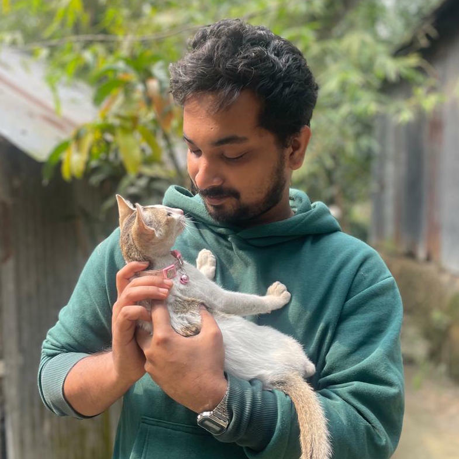

01ROBOTICS
Autonomous Chemical Spraying Robot
A real-time perception and control system for precision agriculture that identifies weeds and crops and triggers targeted spraying on edge hardware.

Hi, I’m Mohammad Akash — an AI/ML engineer based in Dhaka. 👋
I build practical systems across computer vision, LLM applications, robotics, and automation. 🤖
I’m currently an AI Engineer at Betopia Group, contributing to an internal AI ecosystem used across 26 SBUs and more than 5,000 employees.
My selected work includes an autonomous chemical-spraying robot, an AI grocery checkout system, a medical reporting platform, and an ERP-integrated sales agent. 🛠️
I studied Computer Science and Engineering at North South University, specializing in machine learning and computer vision.
You can reach me on LinkedIn, via email, or see my code on GitHub. My CV is also available.
CVA selection of personal projects I’ve built across computer vision, robotics, and practical AI.
A real-time perception and control system for precision agriculture that identifies weeds and crops and triggers targeted spraying on edge hardware.
A computer vision checkout system that recognizes products and builds a real-time shopping list.
A local-first desktop data-science workbench for turning messy tabular data into reproducible analysis and machine-learning experiments.
A local, deterministic OpenAI-compatible gateway that chooses the right model for each request using intent-aware routing, ordered fallbacks, health checks, and local-first privacy.